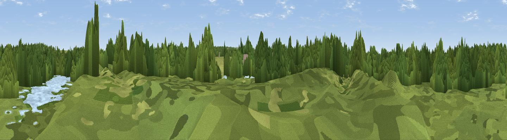

Raptor Watch
#45702 in England · top 95% of its area beats it · near MooreWhere it is
The exact computed spot (SJ 57493 85424). Click the marker for map links.
The view, rendered

A 360° render of this exact spot computed from the terrain model, tree cover and land cover — summer colours, afternoon light, calibrated against photographs of famous viewpoints. Real trees, hedges and buildings will differ in detail.
The panorama
Grey silhouette: terrain skyline in each direction (720 bearings, Earth curvature and refraction included). Dashed green: skyline with trees (+15 m) and buildings (+8 m) as obstacles. Blue strip: how far the ground is visible on each bearing.
Where the view opens
Wedge length = distance to the farthest visible ground on that bearing (vegetation-aware). Rings at 10, 25 and 50 km.
What fills the view
68% woodland · 19% grassland · 5% cropland · 5% water · 3% built-up
Angular shares of the visible panorama (visual magnitude), not map area. Landscape diversity 0.42 (0–1 Shannon).
Key numbers
More beautiful places nearby
The staircase of upgrades: each row has a higher view potential than everything closer. Driving times are estimates from straight-line distance, calibrated against real road routing — check an actual route before setting out.
| Place | Direction | Drive | Score |
|---|---|---|---|
| Viewpoint near Daresbury | S · 3 km | ~7 min | 30.5 |
| Viewpoint near Cuerdley Cross | WSW · 3 km | ~8 min | 56.7 |
| Viewpoint near Stretton | E · 3 km | ~8 min | 59.2 |
| Viewpoint near Stretton | ESE · 4 km | ~9 min | 70.3 |
| Frodsham War Memorial | SW · 10 km | ~20 min | 71.4 |
| Beacon Hill | SSW · 10 km | ~20 min | 74.3 |
| Helsby Hill | SW · 13 km | ~24 min | 74.6 |
| White Brow | NNE · 28 km | ~45 min | 82.9 |
53.36397, -2.64023 · source: osm viewpoint · position refined by local search. Computed location — check access rights before visiting.